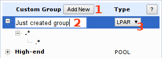
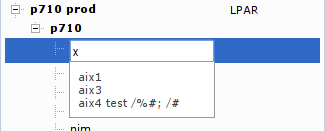

- Push Add New button to create new custom group.
- Type some name for that group and confirm it with [Enter].
- Select group type (LPAR/POOL). Note: new group type can only be changed before saving configuration.

- Right click on group/item name field to open the context menu.
- Use context menu to Edit/Create/Delete items, Tip: press [F2] key or double click on the row to enter edit mode, press [Del] key to delete row.
- You can see live preview of group content on the right

Both server and LPAR/POOL name fields have context sensible autocomplete, just start typing to see it in action.
You can use regular expressions in server name and pool/lpar name.
Examples:
.*
|__ .* group will contain all LPARs/pools from all servers
p[67].*
|__ vio.* group will contain lpars started vio*
from servers starting with p6 or p7 string